制作資料 ／ 第一版音盤日和 制作ノート
画面と素材の引き継ぎ用見本帳・ドット絵改訂版
起動と画面の変更
フォルダを展開して index.html を開くと開始できます。素材も含めてオフラインで動作します。過去の進行を引き継ぐ場合は、元のゲームと同じブラウザ、同じ index.html の場所で開いてください。ローカルファイルの保存領域はブラウザによって異なります。
仮題は「音盤日和」。春の街角で小さな音楽事務所を設立し、楽曲発表・初受賞を節目にホームの建物が育ちます。所属カードの詳細は開閉式です。練習室では顔を押すと名鑑が開きます。顔または名前札を別の部屋へドラッグ（スマホは長押し）するか、名前札を選んで「ここへ移動」を押すと割り当てが変わります。チェックは選択中、⚠ 疲労は調子35未満です。季節の結果には街角の帯、イベントの挿絵、成長した人物の表情、会場・受賞の記録を添えました。
index.html は読み込みとタイトル、style.css はレイアウト・配色、app.js は画面と操作、art.js は画像参照・顔合成・出来事の挿絵を担当します。engine.js と data.js は原版のままです。初回のオーディションは原版どおり6人、翌年以降は5人です。screenshots/ は比較用の旧画面です。
色・文字・操作部品
紙 #f6f0e3インク #263a39操作 #196459朱 #b94e39金 #f4bd69
紙色と深緑を基調に、朱は章のアクセント、金は節目に使います。夜間は端末の設定に合わせて暗い緑へ切り替わります。見出しは明朝系、長い説明は端末のゴシック系、数値は等幅を優先。顔は32ドット、アイコンは16ドット、見出し・練習室・会場・イベントは80×36ドット、季節の帯は120×36ドット。活動形態は単独が32×32、複数人が64×32ドット。これらの絵は共通の16色を使い、マス目に直接描いています。動きを減らす設定では帯のアニメーションを省きます。
次の季節へ ▶編成・転向個性タグ
活動形態別の編成カード
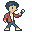
ソロシンガー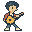
シンガーソングライター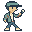
ラッパー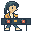
DJ・トラックメイカー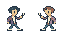
デュオ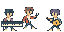
ユニット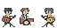
バンド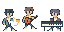
インストバンド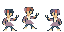
アイドルグループ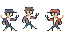
ダンス＆ボーカルグループ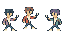
ボーカルグループ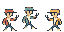
ヒップホップクルー発掘を確認すると「!」が消え、既読の季節はセーブに記録されます。順位変動は New、↗ n UP、↘ n DOWN、→ KEEP の4種。ホームの建物は images/office/、ほかのタブの見出し用の絵は images/pages/、顔の名鑑と順位バッジは app.js、ドラッグと長押しは training-input.js で管理します。
人物パーツの見本
images/faces/ の各PNGは切れ目のない格子です。原点は左上。列が形、行が色で、ともに0始まり。任意のセルの左上は（列×32、行×32）、切り出しは32×32です。下表の上から順に重ねます。髪の前後は同じ色の行を使います。
| シート | 部位 | 列数 | 行数 |
|---|
| back.png | 後ろ髪 | 10 | 8 |
| skin.png | 輪郭・肌 | 3 | 5 |
| coat.png | 服 | 10 | 6 |
| eyes.png | 目 | 12 | 1 |
| brow.png | 眉 | 6 | 1 |
| mouth.png | 口 | 8 | 1 |
| front.png | 前髪 | 12 | 8 |
| extra.png | アクセサリー（0列はなし） | 9 | 1 |
保存済みのIDと名前から決まった順番で形と色を選びます。新規の顔データは不要です。調子や総合値の伸びによる表情変化は表示時のみ。ゲームの乱数は消費しません。
事務所の成長
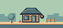
設立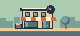
初の楽曲発表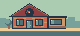
初受賞練習スタジオ
バランスボイス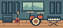
楽器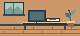
作曲ダンスステージ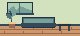
休養 ライブとフェス
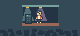
ライブハウスホール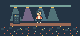
アリーナドームサブメインヘッドライナー発掘場所
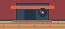
ライブハウスダンススクール路上ライブSNSイベント挿絵
体調怪我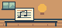
着想贈り物話題旅撮影収録契約荒天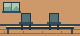
不和思い出手紙 記号
アイコンは images/icons/ の用途別フォルダに個別PNGで保存。ファイル名はゲームデータのキーと対応します。イベント32種は13点の代表挿絵と既存の背景を内容に応じて使用し、割り当ては art.js の eventImages で変更できます。